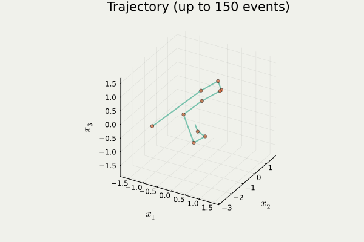

1 Gauss 過程の上限の集中不等式
A Blog Entry on Bayesian Computation by an Applied Mathematician
$$
$$
1.1 等周不等式
体積測度 \mu が等しい可測集合のうち，球が最小の測度を持つ．
1.2 正規分布に関する等周不等式
\mathbb{R}^n だけでなく \mathbb{R}^\infty 上でも成り立つ．
1.3 中央値周りへの集中不等式
同様の命題を平均値の周りに関しても示せる．係数 2 が前につくものは (Gross, 1975) による正規分布に関する対数 Sobolev 不等式から導ける．
2 Markov 過程の収束
2.1 劣指数エルゴード定理
この V は ドリフト関数 ともいう．証明法は (Kulik, 2018) が扱う skelton 連鎖 X_n:=X_{hn}\;(h>0,n=1,2,\cdots) に帰着する方法と，再起過程 (regeneration process) を用いた (Hairer, 2021) による直接的方法がある．
2.2 成立条件
2.3 Langevin 拡散のエルゴード性
3 最適輸送
4 Zig-Zag サンプラー

anim_traj() in PDMPFlux.jl package5 今後の展望：モデル選択への応用
Borell, C. (1975). The brunn-minkowski inequality in gauss space. Inventiones Mathematicae, 30, 207–216.
Giné, E., and Nickl, R. (2021). Mathematical foundations of infinite-dimensional statistical models. Cambridge University Press.
Gross, L. (1975). Logarithmic sobolev inequalities. American Journal of Mathematics, 97(4), 1061–1083.
Hairer, M. (2021). Convergence of markov processes.
Kulik, A. (2018). Ergodic behavior of markov processes: With applications to limit theorems,Vol. 67. De Gruyter: Berlin, Boston.
Lévy, P. (1951). Problèmes concrets d’analyse fonctionelle. Gauthier-Villars.
Schmidt, E. (1948). Die brunn-minkowskische ungleichung und ihr spiegelbild sowie die isoperimetrische eigenschaft der kugel in der euklidischen und nichteuklidischen geometrie. i. Mathematische Nachrichten, 1(2-3), 81–157.
Sudakov, V. N., and Tsirel’son, B. S. (1974). Extremal properties of half-spaces for spherically invariant measures. Zapiski Nauchnykh Seminarov Leningradskogo Otdeleniya Matematicheskogo Instituta Im. V. A. Steklova AN SSSR, 41, 14–24.
Footnotes
この設定では \|X\|_\infty は連続分布をもち，M は一意に定まる．↩︎
Citation
BibTeX citation:
@unpublished{2025,
author = {, 司馬博文},
title = {総研大５年一貫博士課程・中間評価},
date = {2025-01-10},
url = {https://162348.github.io/posts/2024/Slides/Master.html},
langid = {en},
abstract = {統計数理研究所．
スライドは{[}{[}こちら{]}\{.underline\}{]}(Master\_Slides.html)．}
}
For attribution, please cite this work as:
司馬博文. (2025, January). 総研大５年一貫博士課程・中間評価.
中間評価（総研大）.